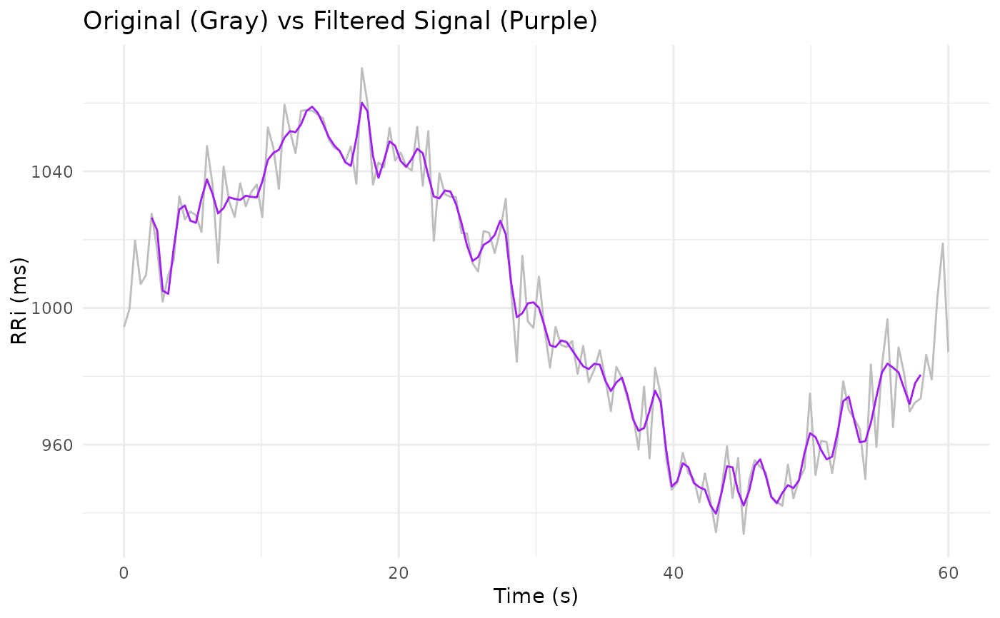

Low-Pass Filter for RR Interval Signals with Edge Trimming
Source:R/filter_signal.R
filter_signal.RdThis function cleans an RR interval (RRi) signal by applying a Butterworth low-pass filter
using zero-phase filtering (via filtfilt from the signal package) and then trimming
the edges of the filtered signal to remove potential artifacts. This approach is particularly useful
for preprocessing RRi data in the context of cardiovascular monitoring and non-linear modeling (see
Castillo-Aguilar et al. 2025).
Arguments
- x
A numeric vector representing the RRi signal to be filtered.
- n
An integer specifying the filter order for the Butterworth filter. Default is
3.- W
A numeric value (between 0 and 1) specifying the normalized critical frequency for the low-pass filter. Default is
0.5.- abs
An integer indicating the number of samples at both the beginning and end of the filtered signal to be trimmed (set to
NA) to remove edge artifacts. Default is5.
Value
A numeric vector of the same length as x containing the denoised RRi signal, with the first and last
abs values set to NA.
Details
The filtering step is performed with a Butterworth filter of order n and critical frequency W,
where W is normalized relative to the Nyquist frequency (i.e. a value between 0 and 1). To avoid edge
artifacts produced by filtering, the function sets the first and last abs samples to NA.
This function is part of the CardioCurveR package, designed to facilitate robust analysis of RR interval fluctuations.
Filtering is performed using a zero-phase forward and reverse digital filter (filtfilt) to ensure that the phase
of the signal is preserved. The trim sub-function sets the first and last abs samples to NA to mitigate
the impact of filter transients. These steps are crucial when preparing RRi signals for further non-linear modeling,
such as the dual-logistic model described in Castillo-Aguilar et al. (2025).
References
Castillo-Aguilar, et al. (2025). Enhancing Cardiovascular Monitoring: A Non-linear Model for Characterizing RR Interval Fluctuations in Exercise and Recovery. Scientific Reports, 15(1), 8628.
Examples
# Example: Simulate a noisy RRi signal
time <- seq(0, 60, length.out = 150)
set.seed(123)
# Simulated RRi signal (in ms) with added noise
RRi <- 1000 + sin(seq(0, 2*pi, length.out = 150)) * 50 + rnorm(150, sd = 10)
# Clean the signal using the default settings
RRi_clean <- filter_signal(x = RRi, n = 3, W = 0.5, abs = 5)
# Plot the original and filtered signals
library(ggplot2)
ggplot() +
geom_line(aes(time, RRi), linewidth = 1/2, col = "gray") +
geom_line(aes(time, RRi_clean), linewidth = 1/2, col = "purple", na.rm = TRUE) +
labs(x = "Time (s)", y = "RRi (ms)",
title = "Original (Gray) vs Filtered Signal (Purple)") +
theme_minimal()
